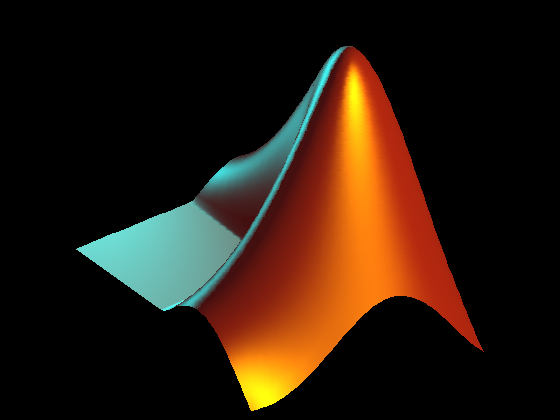

Plot the L-shaped membrane logo with MATLAB lighting.
L = 40*membrane(1,25); set(gcf,'Color',[0 0 0]); axes('CameraPosition', [-193.4013 -265.1546 220.4819],... 'CameraTarget',[26 26 10], ... 'CameraUpVector',[0 0 1], ... 'CameraViewAngle',9.5, ... 'DataAspectRatio', [1 1 .9],... 'Position',[0 0 1 1], ... 'Visible','off', ... 'XLim',[1 51], ... 'YLim',[1 51], ... 'ZLim',[-13 40]); s = surface(L, ... 'EdgeColor','none', ... 'FaceColor',[0.9 0.2 0.2], ... 'FaceLighting','phong', ... 'AmbientStrength',0.3, ... 'DiffuseStrength',0.6, ... 'Clipping','off',... 'BackFaceLighting','lit', ... 'SpecularStrength',1.1, ... 'SpecularColorReflectance',1, ... 'SpecularExponent',7); l1 = light('Position',[40 100 20], ... 'Style','local', ... 'Color',[0 0.8 0.8]); l2 = light('Position',[.5 -1 .4], ... 'Color',[0.8 0.8 0]);